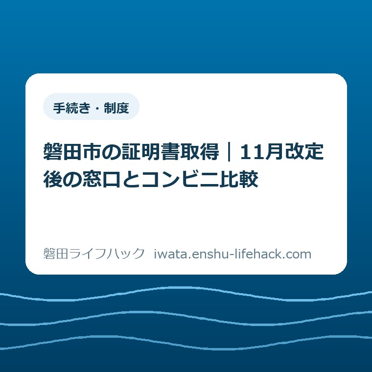
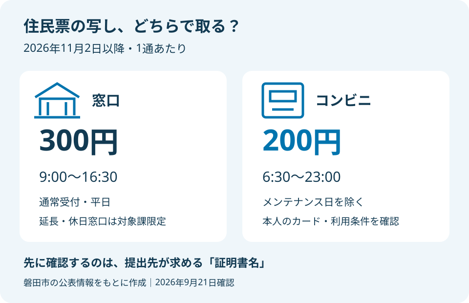
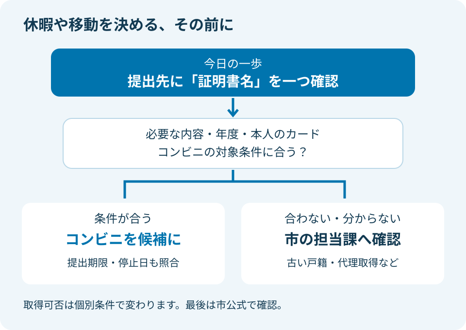

手続き・制度
磐田市の証明書取得｜11月改定後の窓口とコンビニ比較

この記事の要点
Q. 11月から、証明書は窓口とコンビニのどちらで取ればいい？
A. 取得できる証明書は、住所・本籍・必要な記載などの条件で変わります。磐田市は2026年11月2日からコンビニ交付を1通100円減額し、住民票は200円に。窓口の通常受付は9時～16時30分となります。コンビニは6時30分～23時（メンテナンス日を除く）。今日は提出先が求める証明書名を一つ確認してください。
証明書1通のために、すでに予定を動かしている
証明書を取りに行く日は、役所にいる時間だけを空ければ済むわけではありません。職場で抜ける時間を相談し、子どもの迎えや親の付き添いを組み替える。車を使えない日は、往復の移動も考える。書類1通のために、市民の側はすでに手間を払っています。
大石浩之（磐田市／不動産業）です。今回は磐田市の証明書を、窓口とコンビニのどちらで取るか考えます。制度の適用は、住民登録、本籍、証明する内容などで変わります。全員が同じ方法を使えるという前提には立ちません。
2026年9月21日に市の公表情報を確認しました。11月2日の変更は、この記事の公開時点では実施前です。9月や10月に取得する方へ、200円ですでに取れると案内するものではありません。提出期限が11月2日より前なら、値下げを待つより期限を守る段取りを優先してください。
私は、証明書の取得先は「近い店か、役所か」だけでは決められないと考えます。提出先が欲しい書類と、取得先で出せる書類が一致して初めて比較が成り立つからです。基本の手続きは住民票・戸籍・印鑑などの証明書案内へ分け、この記事では料金と生活時間の選び方に絞ります。
11月2日以降の料金は、住民票なら窓口300円・コンビニ200円
磐田市の「証明書コンビ二交付サービス」は、2026年11月2日から交付手数料を1通100円減額すると案内しています。住民票の写しは300円から200円へ変わります。市は窓口より100円安くなると明記しています。下表は、その公表額と差額から整理した改定後の比較です。
| 証明書 | 窓口 | コンビニ |
|---|---|---|
| 住民票の写し | 300円 | 200円 |
| 住民票記載事項証明書 | 300円 | 200円 |
| 印鑑登録証明書 | 300円 | 200円 |
| 戸籍謄抄本 | 450円 | 350円 |
| 戸籍の附票 | 300円 | 200円 |
| 所得証明書・課税証明書（各1通） | 300円 | 200円 |
出典は磐田市の証明書コンビ二交付サービスです。コンビニ欄は対象条件を満たす場合の金額です。本籍が磐田市外の戸籍証明書には、本籍地の定める手数料が別に適用されます。磐田市に住んでいるだけで、全ての戸籍が350円になるわけではありません。
住民票と印鑑登録証明書を各1通取る例なら、窓口では合計600円、改定後のコンビニでは合計400円です。差は200円になります。これは両方を取得できる条件が整った場合の単純計算で、交通費や駐車場代、取得にかかる時間は含めていません。
気をつけたいのは、安く取れた書類でも選び間違いは取り消せないことです。市の案内では、コンビニで証明書を選び間違えても返金や差し替えはできません。住民票1通を200円で取り、同額の書類を取り直せば計400円です。100円の差より、最初の書類名を合わせることが先になります。
「住民票の写し」と「住民票記載事項証明書」は、料金が同じでも名称が違います。提出案内に書かれた名称を、そのまま控えてください。必要な記載、何通必要か、いつまでに提出するかも、取得の段階で関わってきます。似た名前だから代わりになるとは決めず、提出先に確かめるのが私の勧めです。

利用できる時間と、実際に受け取るまでの時間は分ける
磐田市の「市役所窓口の受付時間変更」によると、2026年11月2日から通常の窓口受付は9時～16時30分になります。対象は本庁舎、防災センター、西庁舎、各支所、iプラザです。一方、コンビニ交付の利用時間は6時30分～23時で、メンテナンス日を除きます。
改定前の通常窓口は8時30分～17時15分です。改定後は朝の開始が30分遅くなり、夕方の終了が45分早くなります。受付枠は合計75分短くなりますが、職員の勤務時間と電話の受付時間8時30分～17時15分は変わらないと、市は説明しています。
窓口の受付時間と電話受付を混同しないようにしてください。11月2日以降、17時に電話を受けてもらえることは、17時に窓口へ行けば通常どおり申請できることを意味しません。16時30分までに受け付けた手続きや相談には、受付時間後も対応するという案内です。
木曜日は市民課・市民税課のみ19時までの延長を継続します。第2日曜日も同じ2課で9時～正午の休日開庁を継続します。全ての支所や全ての課が木曜夜に開くわけではありません。業務によって取り扱えないものがあるため、名称を伝えた確認が必要です。
通常の「窓口業務案内」には、第2日曜8時30分からという変更前の記載もあります。この記事では、11月2日以降については7月28日更新の変更告知にある9時からを採用しました。公式ページでも現在の案内と将来の変更が並ぶ時期です。時間の数字に加えて、何月何日からの案内かまで読む必要があります。
コンビニの6時30分～23時は、証明書を交付するサービスの時間です。店舗が24時間営業でも、証明書を24時間取れるわけではありません。市内だけでなく全国の対応店舗を使えるので、勤務先に近い店も候補になります。ただし、必要なマルチコピー機がある店舗かを確かめてください。
窓口とコンビニの「何分で終わるか」は、今回の公式資料だけでは比べられません。窓口の待ち時間も、コピー機の利用待ちや操作時間も一定ではないからです。「必ず5分で済む」とは書けません。出勤前に使う場合も、受け取って内容を確かめる時間を予定から落とさないことを勧めます。
同じ証明書名でも、コンビニで取れない範囲がある
磐田市のコンビニ交付では、マイナンバーカードがあれば全ての証明書を取れるわけではありません。市の案内は、利用者証明用電子証明書を搭載したカードと、数字4桁の暗証番号を必要としています。利用できるのはカードの所有者本人だけです。
住民票の写しは、磐田市に住民登録がある本人と同一世帯の方の現在の住民票が対象です。転出者や死亡者などの住民票は取得できません。個人番号は記載できますが、住民票コードは記載できません。提出先が何の記載を求めているかによって、コンビニを選べるかが変わります。
印鑑登録証明書は、磐田市で印鑑登録している本人の証明書です。家族だからといって、家族のカードを預かってコンビニで取得する使い方はできません。「同一世帯の住民票が取れる」という条件を、印鑑や所得の証明にも広げて読まないようにしてください。
戸籍謄抄本と戸籍の附票では、磐田市に本籍があることが関わります。現在の証明書が対象で、除籍や改製原戸籍は取れません。相続などで古い戸籍まで求められた場合は、この範囲に当たるかを市民課へ確認する必要があります。現在の戸籍を1通取れば必要書類が全部そろうとは限りません。
磐田市に本籍があり、市外に住民登録がある方は、事前の利用登録が必要です。出生や婚姻などの戸籍届出を受理した後も、コンビニで取得できるまで日数が必要とされています。その日数を一律には示せないため、届出直後に使う方は受け取れる時期を市に確かめてください。
所得証明書と課税証明書は、現年度の本人分が対象です。1月1日に磐田市に住民登録があり、申請日現在も住民登録があることが条件で、未申告など交付できない場合もあります。過年度分が必要なのか、書類にどの年度が指定されているのかを見てから取得先を選ぶ必要があります。
カード交付や市外からの転入手続きが済んでも、コンビニ交付は翌日以降でないと利用できません。暗証番号を3回連続で間違えるとロックされ、解除は市民課の窓口で行います。急ぐ日の店頭で番号を推測し続けるより、分からない段階で市民課に確認するほうが段取りを組み直せます。
良い点——帰り道で取れる選択肢に、料金の差がつく
磐田市の改定で私が良いと考えるのは、コンビニ交付を使える人に、時間と料金の両方の利点があることです。早朝や夜に取得できれば、証明書のためだけに平日の休暇を調整する必要を減らせます。100円という差額も、窓口以外の方法を選ぶ理由として分かりやすい金額です。
全国の対応店舗が使える点も、私は生活上の利点だと考えます。磐田市に住み、市外で働く方なら、市役所へ戻る移動と帰宅途中の取得を比べられます。「磐田の書類は磐田の窓口で」という思い込みを外せるだけでも、家族の予定に合わせる余地が生まれます。
木曜延長と第2日曜開庁が残ることも、窓口が必要な人の選択肢を支えます。私はデジタルで完結できる人だけを基準に便利さを評価したくありません。証明書の範囲を相談してから取りたい人や、カードを持たない人が窓口を選べることにも意味があります。
市は受付時間の変更について、業務改善に使う時間を確保し、時間外勤務を減らす目的を説明しています。コンビニ交付の減額は来庁者への影響を和らげるためとされています。窓口の短縮と100円減額は、偶然同じ日に始まる別々の話ではなく、市が合わせて案内している変更です。
注文したい点——取れない人の次の窓口まで示してほしい
磐田市の案内に私が注文したいのは、コンビニで取得できないと分かった人が、次の予定を立てやすい見せ方です。カードがない、古い戸籍が要る、必要な年度が対象外だった。事情が違えば行き先も違います。「便利になりました」の後ろに、使えない場合の相談先を同じ見やすさで置いてほしいと思います。
私は、100円安くなるだけで全員の負担が軽くなるとは考えていません。朝8時30分に立ち寄っていた方には、9時開始が生活上の制約になります。家族の送迎後に16時45分へ着ける方にも、16時30分終了は影響します。改定で助かる人と、予定の変更が必要な人の両方がいます。
市は受付時間内の来庁がどうしても難しい場合、担当課へ連絡して対応可能か確認するよう案内しています。これは希望する時間に必ず対応してもらえるという約束ではありません。私は相談の余地があることを伝えつつ、先に電話で確認する形を勧めます。職員個人への注文ではなく、行く前に分かる案内への要望です。
支所が身近でも、全ての手続きが本庁と同じとは限りません。福田・竜洋・豊田・豊岡から窓口を選ぶ場合は、磐田市の4支所を比較した記事も参照してください。11月2日から各支所も受付時間変更の対象です。距離の短さと取り扱い業務の両方を合わせて考えます。
3つの生活例で、料金より前に比べる条件を見る
窓口とコンビニを選ぶ判断材料は、必要な証明書、取得できる条件、提出期限です。ここからは実際の相談記録ではなく、条件を整理するための仮定の例を示します。家族や勤務の事情を一律の正解に当てはめるものではありません。
1つ目は、現在の住民票を1通必要とし、本人のカードと暗証番号が使える方です。必要な記載もコンビニで出せると確認できたなら、11月2日以降は200円で取る方法を候補にできます。仕事帰りに対応店舗へ寄れるなら、そのためだけに役所へ向かう移動を減らせるかもしれません。
2つ目は、親の書類を子がそろえる場合です。親のマイナンバーカードを借りて操作する方法は選べません。住民票なら同一世帯か、印鑑なら誰の証明かで条件が違います。代理で窓口取得できるか、必要書類は何かを市民課に尋ねるところからです。家族を頼れることと、本人だけのサービスを代行できることは別です。
3つ目は、転入の当日に住民票が必要な場合です。市外からの転入手続き後のコンビニ利用は翌日以降という制約があります。翌日まで待てるか、当日の別の取得方法を確認すべきかは、提出期限から決めることになります。コンビニの営業時間が長くても、この条件を飛び越えることはできません。
窓口へ行かない手段にも、店頭で受け取るものと、電子申請を使うものがあります。例えば原付ナンバーのオンライン申請を整理した記事は別の手続きです。私は「ネットなら同じ」とまとめず、何をどこで受け取って完了するのかまで分けて読むことを勧めます。

対案・結論——今日は必要な証明書名を一つ確認する
証明書取得のために今日行うことは、提出先が求める証明書名を一つ確認することです。休暇を取る、家族に車を頼む、コンビニへ向かう。その前に、案内文の名前と自分が取ろうとしている名前を合わせます。制度全体を一度に覚える必要はありません。
提出先への聞き方は、「必要なのは住民票の写しですか。住民票記載事項証明書ですか」で構いません。書類名が判明したら、取得時には記載事項や年度、通数も案内どおりかを照合します。聞いた名称はスマートフォンのメモや紙へそのまま残すと、店頭や窓口で言い換えずに確認できます。
市民課へ問い合わせる場合は、「この名前の証明書を、この人の分として取りたい」と伝える形を勧めます。戸籍・住民票・印鑑関係の市民課は0538-37-4816、所得・課税証明書の市民税課は0538-37-3767です。いずれも今回確認したコンビニ交付の公式案内にある問い合わせ先です。
取得方法を家族に共有する際は、暗証番号を共有メモに書く必要はありません。書類名、取得する本人、提出期限が分かれば、まず予定を相談できます。私は「誰かがついでに取っておいて」という曖昧な頼み方を減らすだけでも、二度の移動を防ぐ助けになると考えます。
大石の視点——100円の外にある負担を数えたい
私はこう考えます。証明書の安さは、レジで払う金額だけでは決まらない。仕事を抜ける調整と家族の移動まで含めて比べたい。制度が整っていても、使う人がその時間に動けなければ、生活の中では使えません。だから、料金表の隣に受付時間と利用条件を置く必要があります。
私が迷うのは、100円の減額をどこまで強く勧めるかです。条件が合う方には分かりやすい利点ですが、書類を取り直すなら差額は消えます。窓口で内容を確認したい方にまで、安いからという理由でコンビニを勧めるのは違うと考えています。比較の結論は、家族ごとに変わって構いません。
家の手続きでも、私は書類の枚数より、提出先で使える内容がそろっているかを先に考えます。今回も同じです。今日、取得先まで決めなくても、必要な証明書名が一つ分かれば判断材料は増えます。既に予定をやりくりしている方へ、調べる項目を際限なく増やさず、その一歩を渡したいと思います。
よくある質問
磐田市の証明書取得で迷いやすい料金、家族の代理、時間外窓口について、2026年9月21日確認の公式情報をもとに答えます。11月2日以降の予定と、利用者ごとの条件を合わせて確認してください。
住民票はいつから、いくらで取れますか？
磐田市の住民票の写しは、2026年11月2日からコンビニ交付が1通200円になります。改定前は300円で、改定後の窓口との差は100円です。磐田市に住民登録がある本人や同一世帯の現在の住民票が対象で、転出者などの住民票は取れません。利用できるカードや必要な記載も、市の公式ページで確認してください。
家族のマイナンバーカードを借りて取れますか？
磐田市のコンビニ交付を利用できるのは、マイナンバーカードの所有者本人だけです。家族のカードを預かって代わりに操作する使い方はできません。本人のカードで同一世帯の現在の住民票を取得できる場合はありますが、証明書ごとに対象範囲が違います。家族の分を必要とする場合は、証明書名と関係を市民課に伝えて確認してください。
11月以降も夕方や休日に窓口へ行けますか？
磐田市は2026年11月2日以降も、市民課・市民税課の木曜19時までの窓口延長と、第2日曜9時～正午の休日開庁を継続すると案内しています。全ての課や支所が対象ではなく、取り扱えない業務もあります。祝休日などの日程や必要な証明書の取り扱いは、休暇や移動を決める前に公式案内と担当課で確認してください。
参考にした公式情報
2026年9月21日確認。料金の適用日と窓口時間の変更日を分けて照合しています。
- 証明書コンビ二交付サービス／磐田市（2026年8月31日更新、2026年9月確認）
- 市役所窓口の受付時間変更／磐田市（2026年7月28日更新、2026年9月確認）
- 窓口業務案内／磐田市（2026年7月16日更新、2026年9月確認。変更前の通常受付時間と窓口の連絡先を参照）

最終確認日：2026-09-21 ／ 本記事は非公式の案内です。制度・手数料・受付時間は変更される場合があり、取得可否は個別条件で変わります。最後は必ず磐田市の公式ページで最新情報を確認し、不明点は市の担当課へお問い合わせください。